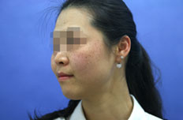
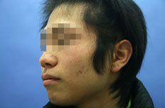
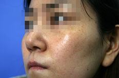
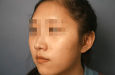
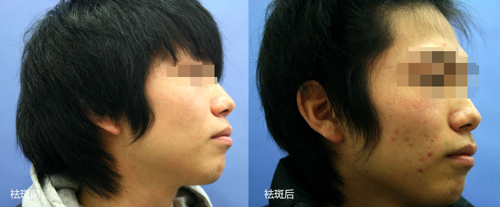
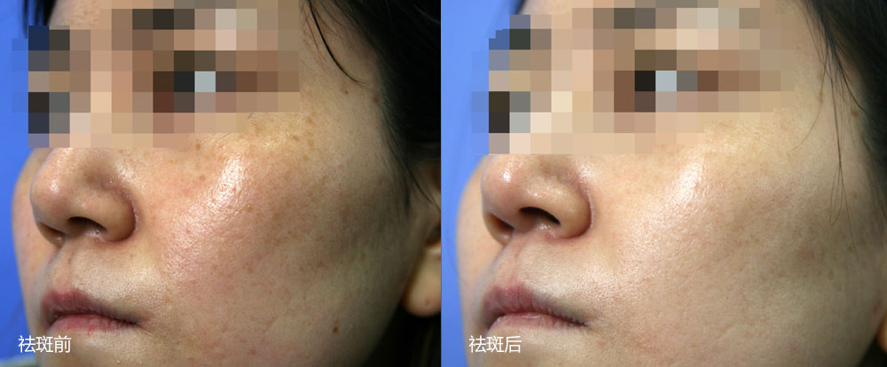
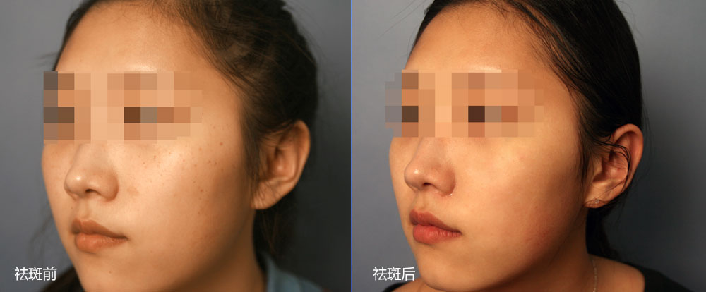

江城分型祛斑――祛斑真人秀
- 
- 
- 
- 

- 
- 
- 
电话 : 021-6519 1999
我要变美
VISIA皮肤检测系统是美国Canfield公司研发的，目前世界上最先进的皮肤影响分析系统，利用光学原理，可以便捷准确的检测出所有色斑的种类。
先在脸上涂抹祛斑专用的冷冻�ㄠ�，再蒙上保护眼睛的纱布与眼罩，激光不会晃到眼睛，激光闪过，色斑消失，毫无痛感。
做完激光治疗之后，皮肤发红，感觉烫烫的，这是正常的感觉，需要及时冰敷缓解不适，治疗室旁边设有休息区，可以边看电视边冷敷，舒适惬意。
激光祛斑后需要配合中药方内调，由资深中医科专家面诊开方，定制属于您的内调药方，全面调理促进皮肤色素代谢，从根源上杜绝了色斑反复。
祛斑后10天，需要复诊做水氧护理，因为激光美容后的一个月内最好能做4-8次补水，让皮肤更水润更健康。注意防晒，继续敷防返黑的面膜，每天口服4片维生素C、1片复合维生素B。
有10%的人在做激光祛斑2-3 周后，新生皮肤会渐渐变成咖啡色，但是肯定没有以前的色斑颜色深，这个就叫"返黑"。这都是正常的，需要二次祛斑，这种情况极为的少，且在进行第二次祛斑之后，几乎可以完全清除。
江城祛斑专家要进行色斑种类诊断，不同种类的斑需要不同的祛斑方法，分斑分治，才能奏效。
雀斑和黄褐斑是不一样的，用同样的手段显然是不合理的，没有效果或者收效甚微。
江城祛斑分类有更多的祛斑方法。包括激光、修复肽、草本果酸、微针美塑、水氧活肤、中医调理、内分泌调理等。
绝大多数的色斑，单纯方法是祛不掉的，需要多种方法优势互补，联合祛斑才有效。
VC分类祛斑使用的是成套激光设备，不同色斑采用不同设备、不同激光解决。
色斑深浅不一，需用不同波长和能量的激光来处理，选用最合适的激光要用到多种设备，单一设备，不足以应对所有色斑。

林柳益主任，毕业于上海中医药大学，从事皮肤美容科临床研究工作多年，拥有扎实的中西医结合皮肤美容技术功底，曾在上海中医药大学附属龙华医院、上海第九人民医院、华山医院等着名医疗机构进修，在医学美容专业报刊等媒体发表论文多篇。
擅长：色素性皮肤病(雀斑、黄褐斑、太田痣等)、光老化皮肤(皮肤松弛、皱纹、萎缩、毛孔粗大、皮肤色素增加/减少、毛细血管扩张等)、痤疮、纹刺去除等
咨询专家
孙卫华,美容顾问,曾就职于上海着名三甲医院整形美容外科多年,拥有扎实的皮肤美容技术功底,并积累了丰富的临床经验,多年来已拥有数万例的成功美容经验,帮助各年龄段的广大爱人士恢复了靓丽的肌肤,深受青睐与好评。
擅长：雀斑,黄褐斑,老年斑,疤痕,胎记
咨询专家
①大小均匀的分布在面部
②以下眼睑、面颊、鼻根
③多见于女性
①常出现在颧骨前额周围
②褐色的弥散性色斑
③多见于女性
①暴晒的部位均可出现
②红色斑点，深浅不一
③几日后转为棕色色块
①大多是面颊两侧对称
②颜色呈灰、褐色
③20岁以上多见
①天生便有，边缘清晰
②多发于面部和躯干，会
变大增多，形状数目不一
激光方案：调Q绿宝石激光
飞顿大Q皮肤色素激光
祛斑效果：激光去除表皮色斑之后，结合修复精华液面膜、草
本果酸面敷以及微针美塑修复肌肤，1-2次即可祛
掉雀斑。
激光方案：飞顿大Q皮肤色素激光
IPL复合彩光
祛斑效果：黄褐斑色素分布复杂，单一激光收效甚微，多种波
长联合使用，能够达到最佳的激光淡斑效果。江城
分型祛斑结合中医科，内分泌科等科室联合治疗，
改善内分泌，最大程度的祛除黄褐斑，是完全可以
做到的
激光方案：飞顿大Q皮肤色素激光
祛斑效果：用飞顿大Q皮肤色素激光去除表皮色斑，加速皮下色
斑瓦解，由淋巴循环代谢出体外，结合修复精华液面
膜、草本果酸面敷修复肌肤，配合中医科定制内调中
药调理，仅需1次，即可清除晒斑，嫩肤养颜。
激光方案：调Q绿宝石激光 飞顿大Q皮肤色素激光
祛斑效果：咖啡斑因基底层黑色素细胞会不断增加，面积会扩
大，调Q绿宝石激光发出的Q开关激光会在瞬间发
射高能量，使相应色素集基团急速震荡并粉碎，只
需要1~2次激光处理即可消除。
网友
医 生
网友
医 生
网友
医 生
网友
医 生
网友
医 生